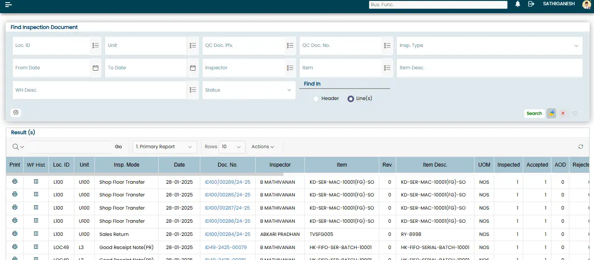
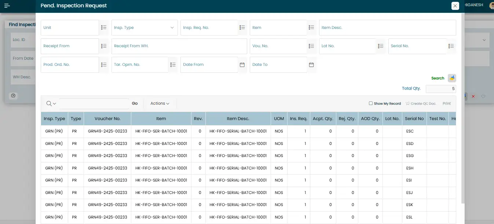
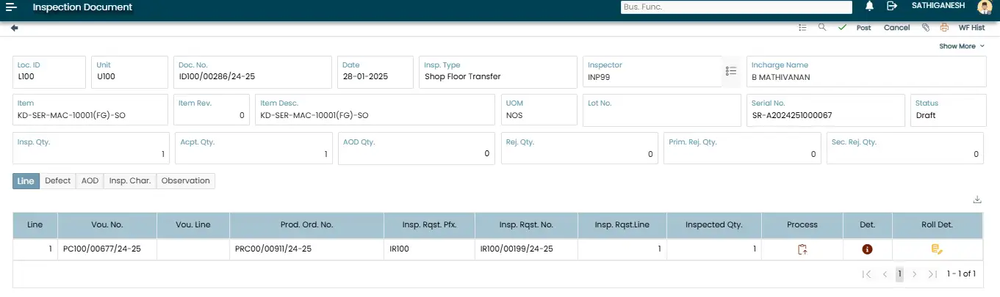
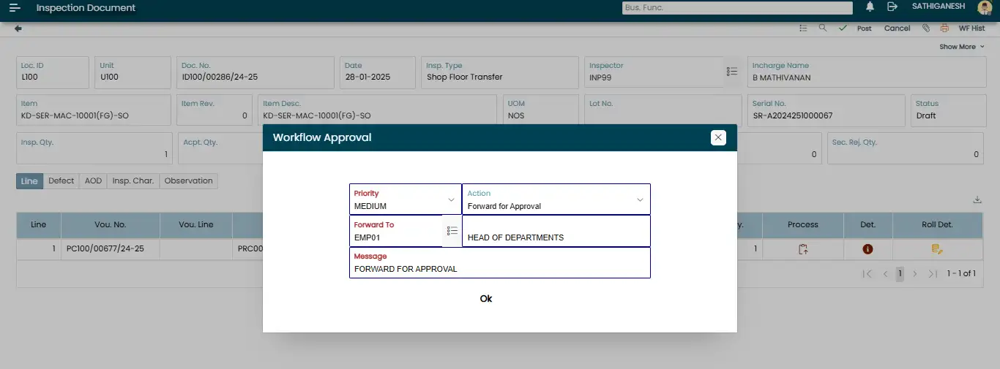

<div data-category="Inventory Control" data-title="Inspection Document (Stock QC)" data-updated="January 27, 2026" data-contributors="RoadmapIT" data-breadcrumb="Home,Inventory Control,Inspection Document (Stock QC)">
  <div class="page-content">
    <p>An inspection document is a record or report that documents the results of the quality inspections performed on items received into stock.</p>
    <p>This screen is used to inspect the stocked Items.</p>
    <h5>Navigation path:</h5>
    <p class="fs-6">Quality Control \ Transaction \ Inspection Document</p>
    
    <ul style="list-style-type: none; align-content: center">
      <li class="mouse-icon">After posting the Material issuance, Inspection document must be processed for the stock inspection.</li>
      <li class="mouse-icon">Search screen displays the list of Inspection requests with the relevant details and its status</li>
      <li class="mouse-icon">User can filter the respective documents by entering the search parameters at the header.</li>
      <li class="mouse-icon">On clicking search button, system displays the results relevant to the search parameters entered.</li>
      <li class="mouse-icon">
        Using
        
        icon, entered search parameters can be cleared.
      </li>
      <li class="mouse-icon">
        To close the screen, use
        <i class="bi bi-x fs-4 mx-2 text-danger"></i>
        icon.
      </li>
      <li class="mouse-icon">Select the Inspection request and click on Create Inspection Doc. to create Inspection document from pending inspection request</li>
    </ul>
    
    <ul style="list-style-type: none; align-content: center">
      <li class="mouse-icon">Select the corresponding document and click Create QC Doc button.</li>
    </ul>
    
    <ul style="list-style-type: none; align-content: center">
      <li class="mouse-icon">
        On clicking Post
        <i class="bi bi-check-lg fs-4 mx-1 text-success"></i>
        button, document is forwarded for approval.
      </li>
    </ul>
    
    <ul style="list-style-type: none; align-content: center">
      <li class="mouse-icon">Login to forwarded user</li>
      <li class="mouse-icon">To process the document in Workflow approval, navigate to approvals screen</li>
      <li class="mouse-icon">
        To Click View details button
        <i class="bi bi-info-circle-fill fs-5 mx-2 text-primary"></i>
        to view the selected document
      </li>
      <li class="mouse-icon">Screen navigate into query screen to check the details</li>
      <li class="mouse-icon">Now navigate back to the approval screen</li>
      <li class="mouse-icon">Select the Approval/forward/Return radio button and click Process button to perform the corresponding Workflow process on the selected document</li>
    </ul>
  </div>
</div>
